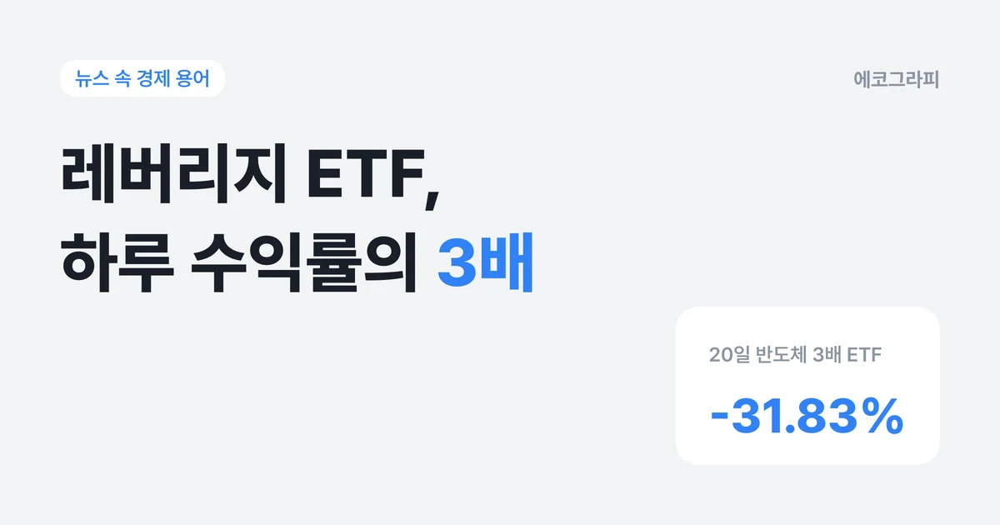
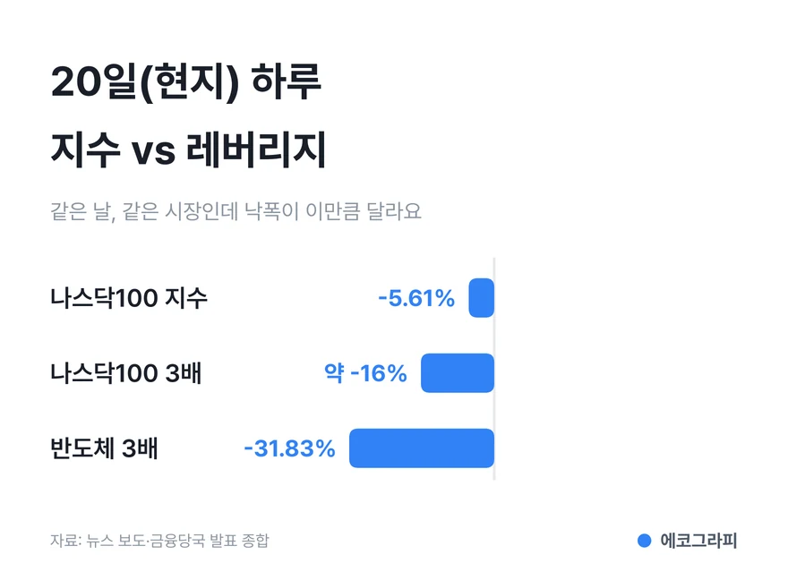
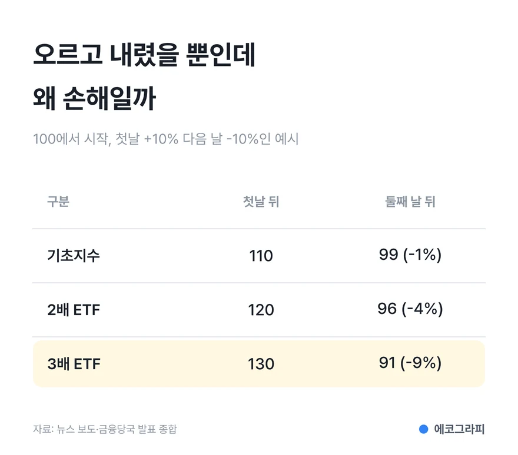
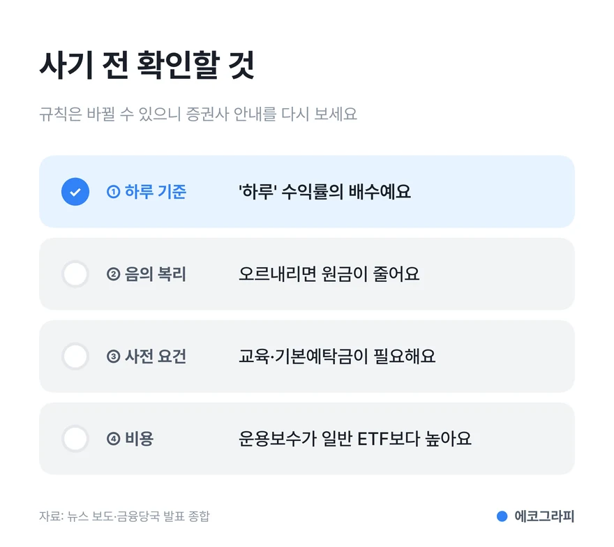
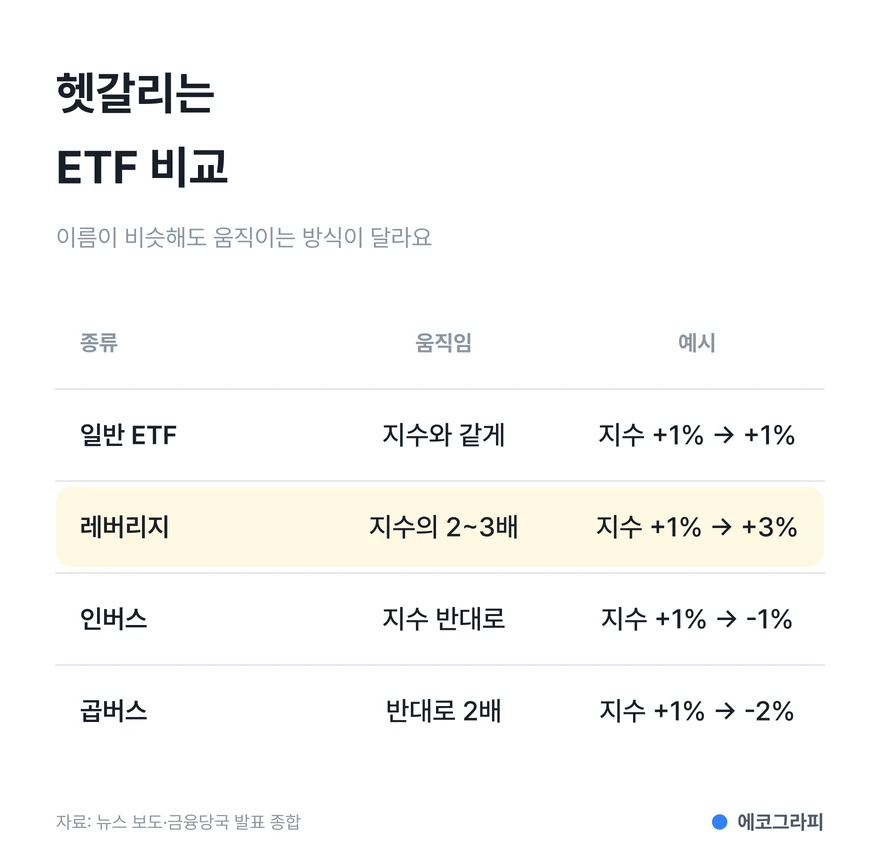

20일(현지) 뉴욕증시에서 엔비디아가 14% 넘게 빠지는 등 반도체주가 크게 흔들렸어요. 기사들은 미국 반도체 지수를 3배로 따라가는 ETF가 하루 만에 31.83% 내린 30.88달러로 마감했다고 전했어요. 이 상품은 6월 22일 300.77달러로 최고가를 찍었는데, 5개월 만에 약 90% 아래로 내려왔어요. 어제 시장 흐름은 오늘 아침 시황에 정리했어요.
이 ETF는 한국 투자자들도 많이 사는 상품이에요. 이달 초에도 서학개미가 일주일 동안 2조 원 넘게 순매수했다는 보도가 있었어요.
레버리지 ETF: 선물·스와프 같은 파생상품을 써서 기초지수 하루 수익률의 정해진 배수(2배·3배)를 내도록 설계한 ETF예요. 지수가 하루 1% 오르면 3배 ETF는 약 3% 오르고, 1% 내리면 약 3% 내려요.
여기서 핵심은 '하루'예요. 레버리지 ETF는 매일 장 마감 때 배수를 다시 맞춰요. 그래서 한 달, 일 년 같은 긴 기간 수익률은 지수 수익률의 3배와 전혀 다를 수 있어요.

같은 날 나스닥100 지수는 5.61% 내렸고, 이를 3배로 따라가는 ETF는 약 16% 내렸어요. 반도체 3배 ETF는 반도체 지수 자체가 더 크게 빠지면서 30%를 넘었어요.
지수가 첫날 10% 오르고 다음 날 10% 내리면, 지수는 100 → 110 → 99로 1% 손해예요. 같은 이틀 동안 3배 ETF는 100 → 130 → 91로 9% 손해가 돼요. 지수는 거의 제자리인데, 레버리지 ETF는 훨씬 많이 잃은 거예요.

이런 현상을 음의 복리 또는 '변동성 끌림'이라고 불러요. 위아래로 크게 출렁이는 장일수록, 그리고 오래 들고 있을수록 손실이 쌓이기 쉬워요. 반대로 한 방향으로 쭉 오르는 장에서는 3배보다 더 크게 벌 수도 있어요. 결국 방향과 변동성 둘 다에 크게 영향을 받는 상품이에요.

기억할 것: 레버리지 ETF는 '지수를 오래 3배로 키워 주는 상품'이 아니라 '하루 움직임을 3배로 키우는 상품'이에요. 이 차이만 알아도 뉴스 속 큰 숫자가 왜 나오는지 이해하기 쉬워요.

인버스는 지수와 반대로 움직여서 지수가 내릴 때 수익이 나요. 인버스 2배를 흔히 곱버스라고 불러요. 인버스와 곱버스도 '하루' 기준이라 음의 복리가 똑같이 생겨요. 일반 ETF가 처음이라면 ETF 기초 글부터 읽어 보세요.
하루 동안 10% 오른 거라면 대략 30%에 가까워요. 하지만 여러 날에 걸쳐 10% 오른 거라면, 그 사이 오르내림에 따라 30%보다 많을 수도 적을 수도 있어요.
기초지수가 하루에 33% 이상 빠지면 이론상 그럴 수 있어요. 실제로는 상품마다 안전장치가 있지만, 큰 손실이 날 수 있다는 건 분명해요.
파생상품을 운용하는 비용이 들어서 일반 지수 ETF보다 운용보수가 높은 편이에요. 오래 들고 있을수록 비용도 쌓여요.
있어요. 코스피200 레버리지처럼 국내 지수를 2배로 따라가는 상품이 있고, 국내 상품도 사전교육과 기본예탁금 같은 요건이 있어요.
※ 2026년 11월 기준으로 정리한 글입니다. 세율·제도는 바뀔 수 있으니 거래 전 증권사·국세청 안내를 한 번 더 확인하세요. 특정 종목·상품의 매수·매도 권유가 아닙니다.